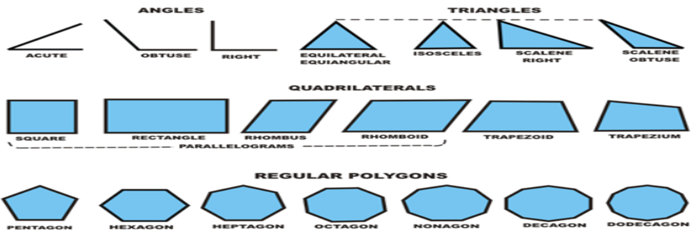
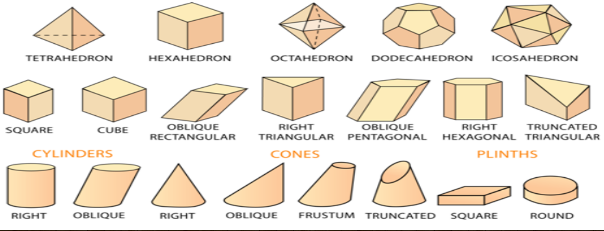
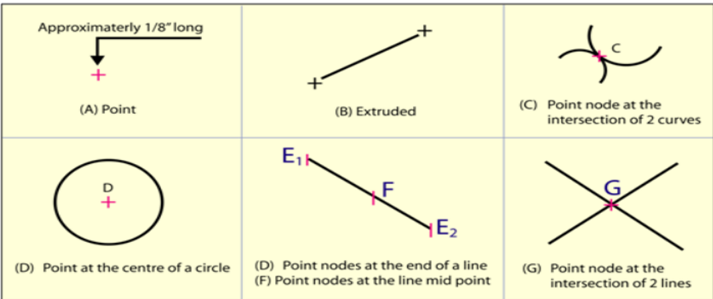
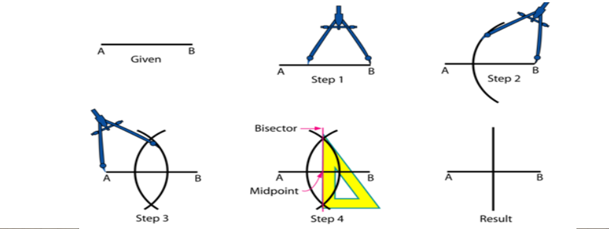
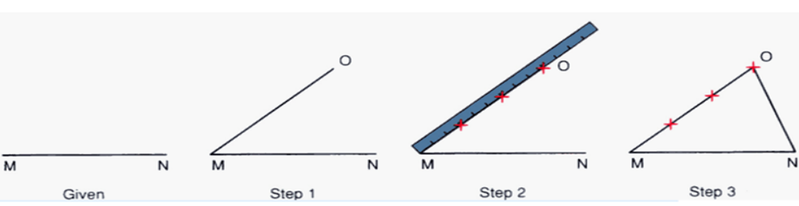
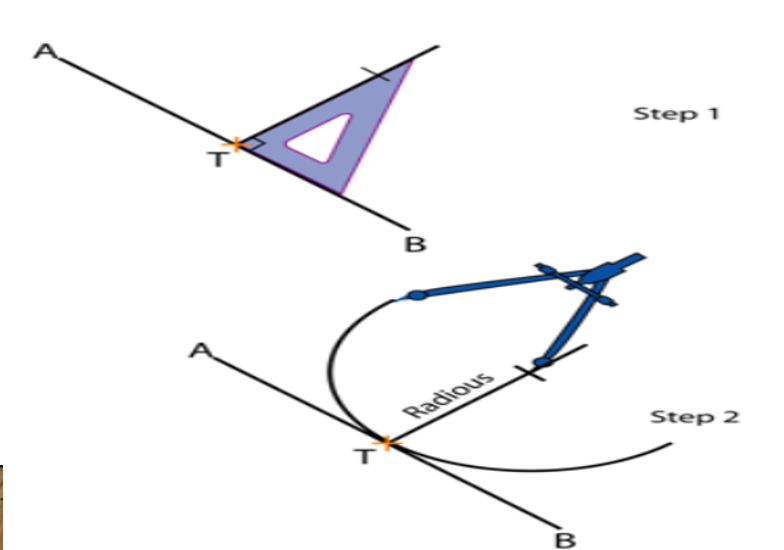
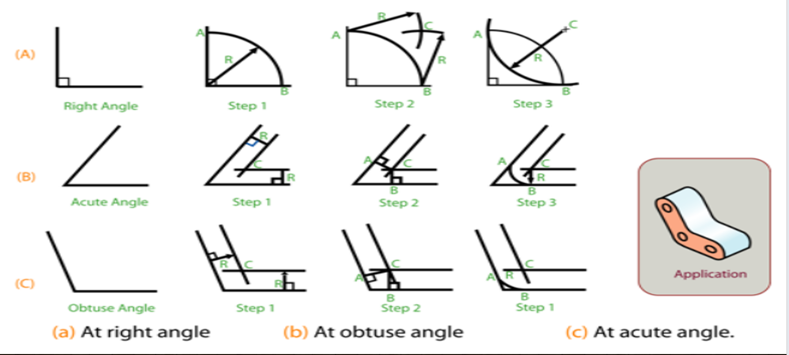
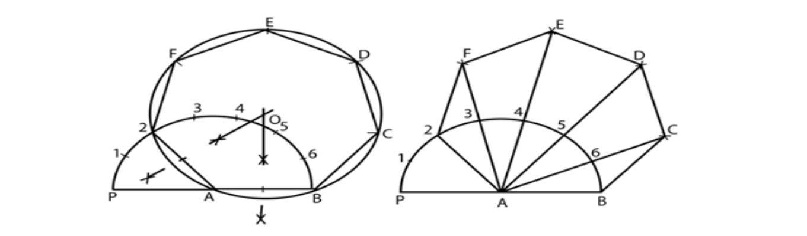
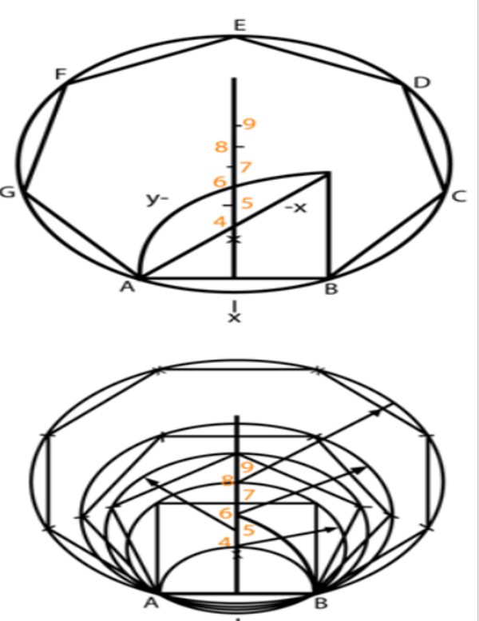

INTRODUCTION TO ENGINEERING DRAWING
Introduction
Engineering drawing –
>
An engineering drawing is a type of technical drawing that is used to convey information about an object. A common use is to specify the geometry necessary for the construction of a component and is called a detail drawing.
-Graphical means of expression of technical details without the barrier of a language. (Representation of 3D object onto the 2D plain or drawing sheet.)
-No construction/manufacturing of any (man -made) engineering objects is possible without engineering drawing.
What will you learn in this course?
You will learn- How industry communicates technical information.
• Visualization – the ability to mentally control visual information.
• Graphics theory – geometry and projection techniques.
• Standards – set of rules that govern how parts are made and technical drawings are represented.
• Conventions – commonly accepted practices and methods used for technical drawings.
• Tools– devices used to create technical drawings and models.
• Applications – the various uses for technical drawings.
GEOMETRICAL CONSTRUCTION
Introduction
• Drawing consists of construction of primitive geometric forms viz. points, lines and planes that serve a the building blocks for more complicated geometric shapes and defining the position of object in space.
• The use of lines for obtaining the drawing of planes.

Introduction • Solids are obtained by combination of planes.

Primitive geometric forms
The basic 2-D geometric primitives, from which other more complex geometric forms are derived.
• Points,
• Lines,
• Circles,
• Arcs
Point
• A point is a theoretical location that has neither width, height, nor depth and describes exact location in space.
• A point is represented in technical drawing as a small cross made of dashes that are approximately 3 mm long.
• A point is used to mark the locations of centers and loci, the intersection ends, middle of entities.

Line
• A line is a geometric primitive that has length and direction, but no thickness. • Lines may be straight, curved or a combination of these.
• Lines have few important relationship or conditions, such as parallel, intersecting, and tangent.
• Lines can be of specific length or non-specific length. A Ray is a Straight line that extends to infinity from a specified point.

Bisecting a line
• With A as centre and radius equal to higher than half AB, draw two arcs.
• With B as centre and with the same radius draw another arc intersecting the previous arcs. • The line joining the intersection points is the perpendicular bisector of the line AB.

Dividing a line into equal parts
• Draw a line MO at any convenient angle (preferably an acute angle) from point M.
• From M and along MO, cut off with a divider equal divisions (say three) of any convenient length.
• Draw a line joining ON.
• Draw lines parallel to MO through the remaining points on line MO.
• The intersection of these lines with line MN will divide the line into (three) equal parts.

Drawing an arc tangent to a given point on the line
• Given line AB and tangent point T. Construct a line perpendicular to line AB and through point T.
• Locate the center of the arc by making the radius on the perpendicular line.
• Put the point of the compass at the center of the arc, set the compass for the radius of the arc, and draw the arc which will be tangent to the line through the point T.
Drawing an arc, tangent to two lines

Construction of Regular Polygon of given length AB
• Draw a line of length AB. With A as centre and radius AB, draw a semicircle. • With the divider, divide the semicircle into the number of sides of the polygon. • Draw a line joining A with the second division-point 2.
• The perpendicular bisectors of A2 and AB meet at O. Draw a circle with centre O and radius OA.
• With length A2, mark points F, E, D & C on the circumferences starting from 2 (Inscribe circle method)
• With centre B and radius AB draw an arc cutting the line A6 produced at C. Repeat this for other points D, E & F (Arc method)

General method of drawing any polygon
• Draw AB = given length of polygon
• At B, Draw BP perpendicular & = AB • Draw Straight line AP
• With center B and radius AB, draw arc AP.
• The perpendicular bisector of AB meets the line AP and arc AP in 4 and 6 respectively.
• Draw circles with centers as 4, 5,&6 and radii as 4B, 5B, & 6B and inscribe a square, pentagon, & hexagon in the respective circles.
• Mark point 7, 8, etc with 6-7,7-8,etc. = 4-5 to get the centers of circles of heptagon and octagon, etc.
